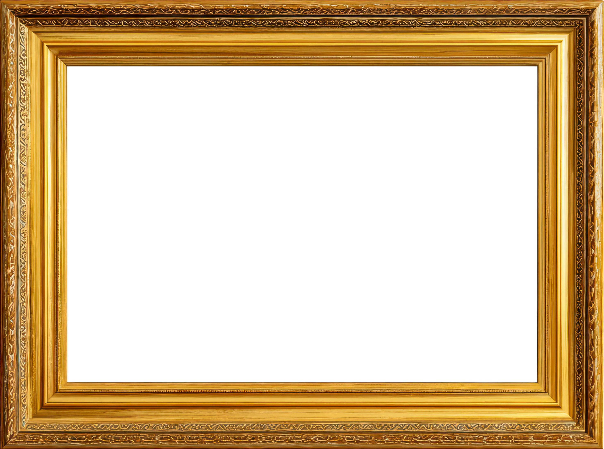
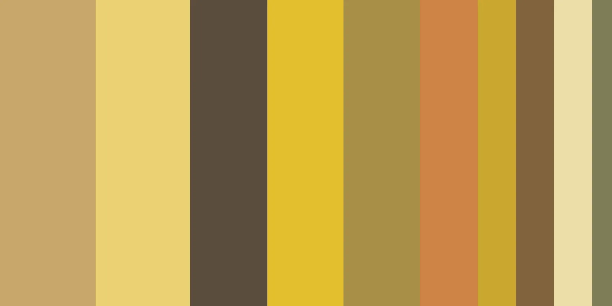
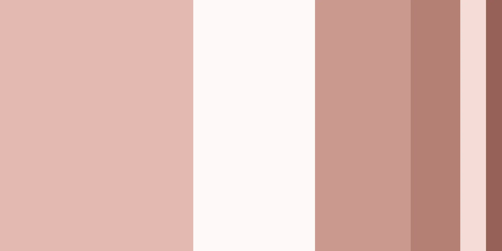
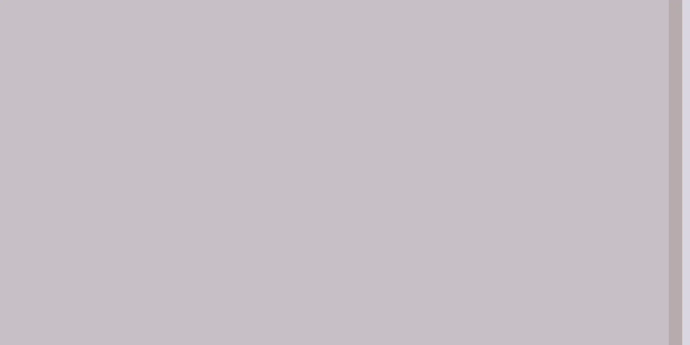

A century of history, portraits and an ever-evolving colour palette. The Archibald is Australia's most prestigious portraiture award, but what do the colours say about it?
Just as each portrait immortalises a particular moment in time, the collection as a whole tells another story: the evolution of artistic styles and techniques. A colourful story, with darker and lighter shades. At first glance, two main trends stand out: the predominance of dark tones and a shared visual identity.
Blacks, browns and earthy tones ruled the early decades of the prize, well into the 1960s, despite the works being painted by different artists and portraying different personalities.
In fact, dark tones accounted for up to 70% of the painted surface during the prize's first couple of decades, according to an analysis published by The Guardian.
Much of this can be attributed to the influence of 19th-century European art, in which darker colours and tones were commonly associated with the formality of portraiture.
As time went by, however, artistic trends began to evolve, introducing a wider and more diverse colour palette.
1966 broke the artistic conventions that the Archibald had until then.
That year, the winner was John Molvig with a portrait of fellow artist, Charles Blackman. Natalie Wilson, curator at the Art Gallery of New South Wales, identifies the portrait in The Guardian's analysis as a turning point in the introduction of new colours to the prize and the start of a different visual identity.
Throughout the 1970s, increasingly expressive and non-naturalistic colours began to find their way into the winning portraits. Colour was no longer simply accompanying the subject of the portrait, but was becoming an element of artistic expression in its own right.


Jon Molvig • Charles Blackman • 1966
By analysing each winning portrait from 1921 onwards, the Archibald's collective palette reveals patterns and trends, despite each portrait having its own visual identity.
The dominant dark tones of the 20th century, have never completely disappeared from the prize. The overview analysis shows a shift towards lighter compositions and greater chromatic diversity, incorporating a wider range of reds, blues, greens and lighter shades.
Perhaps one of the most notorious examples of this transformation is Cherry Hood's watercolour portrait of pianist Simon Tedeschi, winner of the 2002 Archibald Prize. A composition dominated by delicate skin tones against a white background.


Cherry Hood • Simon Tedeschi • 2002


Fiona Lowry • Penelope Seidler • 2014
From a chromatic perspective, Hood's work is diametrically opposed to the portraits that defined the earliest years of the prize. A testament to the artistic diversity the Archibald has come to embrace.
Over the past few decades, the colour palette has become less homogeneous, embracing a wider variety of artistic approaches. Another noticable example is 2014 winner portrait of architect Penelope Seidler by Fiona Lowry and the soft pastel palette.
The evolution becomes even more apparent when grouping the winning portraits by decade.
However, the diversity of the Archibald is not only reflected in its colours, styles and techniques. It is also reflected in the dimensions of its artworks and what is says about the evolution of trends.
According to Wilson, miniature portraits measuring less than 10 centimetres were popular among entrants during the prize's earliest years. As the decades went by, the dimensions of the artworks began to increase.
The 1970s brought with them the influence of American artistic movements, such as pop art, giving way to increasingly large, hyper-realistic portraits. So much so that the prize eventually introduced size restrictions to accommodate the works within the gallery.
But how large, small, wide or narrow are the portraits that have won the Archibald?
Calculating average portrait size...
Different personalities, colours, techniques and even dimension. With over a centruty of history, the Archibald captures Australia's attention through the admiration, curiosity and surprises its artworks evoke.
Every year, several artists will presents their own interpretation of the country of their time, but only one will remain in time; adding a new face, perspective, and colour to an ever-evolving palette.
©